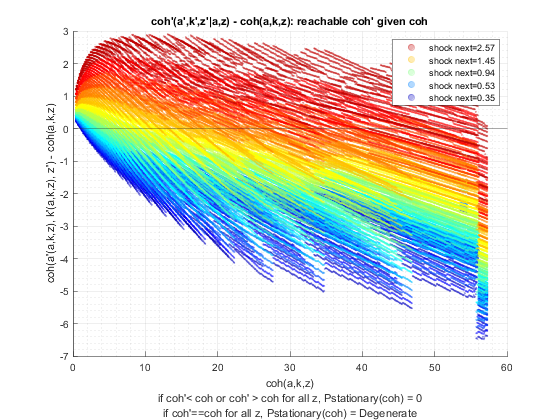
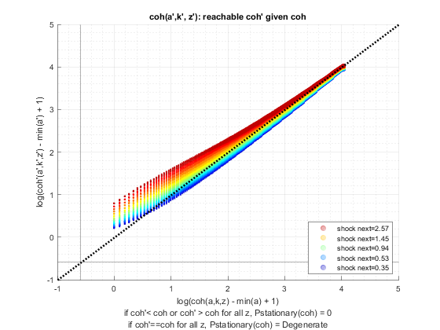

Derive Distributions for Risky + Safe Asset (Saving Only) Interpolated-Percentage (Wrapper)
back to Fan's Dynamic Assets Repository Table of Content.
Contents
function [result_map] = ff_ipwkz_ds_wrapper(varargin)
FF_IPWKZ_DS_WRAPPER finds the stationary asset distributions
This is a warpper function.
Default
- it_subset = 5 is basic invoke quick test
- it_subset = 6 is invoke full test
- it_subset = 7 is profiling invoke
- it_subset = 8 is matlab publish
- it_subset = 9 is invoke operational (only final stats) and coh graph
it_param_set = 8; [param_map, support_map] = ffs_ipwkz_set_default_param(it_param_set); % parameters can be set inside ffs_ipwkz_set_default_param or updated here % param_map('it_w_perc_n') = 50; % param_map('it_ak_perc_n') = param_map('it_w_perc_n'); % param_map('it_z_n') = 15; % param_map('fl_coh_interp_grid_gap') = 0.025; % param_map('it_c_interp_grid_gap') = 0.001; % param_map('fl_w_interp_grid_gap') = 0.25; % param_map('it_w_perc_n') = 100; % param_map('it_ak_perc_n') = param_map('it_w_perc_n'); % param_map('it_z_n') = 11; % param_map('fl_coh_interp_grid_gap') = 0.1; % param_map('it_c_interp_grid_gap') = 10^-4; % param_map('fl_w_interp_grid_gap') = 0.1; % param_map('st_analytical_stationary_type') = 'loop'; % param_map('st_analytical_stationary_type') = 'vector'; param_map('st_analytical_stationary_type') = 'eigenvector'; % get armt and func map [armt_map, func_map] = ffs_ipwkz_get_funcgrid(param_map, support_map); % 1 for override default_params = {param_map support_map armt_map func_map};
Parse Parameters 1
% if varargin only has param_map and support_map, params_len = length(varargin); [default_params{1:params_len}] = varargin{:}; param_map = [param_map; default_params{1}]; support_map = [support_map; default_params{2}]; if params_len >= 1 && params_len <= 2 % If override param_map, re-generate armt and func if they are not % provided [armt_map, func_map] = ffs_ipwkz_get_funcgrid(param_map, support_map); else % Override all armt_map = [armt_map; default_params{3}]; func_map = [func_map; default_params{4}]; end % if profile, profile DP + Dist here support_map('bl_profile_dist') = false; % append function name st_func_name = 'ff_ipwkz_ds_wrapper'; support_map('st_profile_name_main') = [st_func_name support_map('st_profile_name_main')]; support_map('st_mat_name_main') = [st_func_name support_map('st_mat_name_main')]; support_map('st_img_name_main') = [st_func_name support_map('st_img_name_main')];
Parse Parameters
% param_map params_group = values(param_map, {'st_analytical_stationary_type'}); [st_analytical_stationary_type] = params_group{:}; % support_map params_group = values(support_map, ... {'st_profile_path', 'st_profile_prefix', 'st_profile_name_main', 'st_profile_suffix','bl_time'}); [st_profile_path, st_profile_prefix, st_profile_name_main, st_profile_suffix, bl_time] = params_group{:};
Start Profiler and Timer
Start Profile
if (it_param_set == 7) close all; profile off; profile on; end % Start Timer if (bl_time) tic; end
Solve DP
bl_input_override = true; result_map = ff_ipwkz_vf_vecsv(param_map, support_map, armt_map, func_map);
Elapsed time is 2.864515 seconds.
----------------------------------------
----------------------------------------
xxxxxxxxxxxxxxxxxxxxxxxxxxxxxxxxxxxxxxxx
xxxxxxxxxxxxxxxxxxxxxxxxxxxxxxxxxxxxxxxx
Begin: Show all key and value pairs from container
CONTAINER NAME: SUPPORT_MAP
----------------------------------------
Map with properties:
Count: 43
KeyType: char
ValueType: any
xxxxxxxxxxxxxxxxxxxxxxxxxxxxxxxxxxxxxxxx
xxxxxxxxxxxxxxxxxxxxxxxxxxxxxxxxxxxxxxxx
----------------------------------------
----------------------------------------
pos = 29 ; key = st_img_name_main ; val = ff_ipwkz_vf_vecsvff_ipwkz_ds_wrapper_default
pos = 30 ; key = st_img_path ; val = C:/Users/fan/CodeDynaAsset//m_ipwkz//solve/img/
pos = 31 ; key = st_img_prefix ; val =
pos = 32 ; key = st_img_suffix ; val = _p8.png
pos = 33 ; key = st_mat_name_main ; val = ff_ipwkz_vf_vecsvff_ipwkz_ds_wrapper_default
pos = 34 ; key = st_mat_path ; val = C:/Users/fan/CodeDynaAsset//m_ipwkz//solve/mat/
pos = 35 ; key = st_mat_prefix ; val =
pos = 36 ; key = st_mat_suffix ; val = _p8
pos = 37 ; key = st_mat_test_path ; val = C:/Users/fan/CodeDynaAsset//m_ipwkz//test/ff_ipwkz_ds_vecsv/mat/
pos = 38 ; key = st_matimg_path_root ; val = C:/Users/fan/CodeDynaAsset//m_ipwkz/
pos = 39 ; key = st_profile_name_main ; val = ff_ipwkz_vf_vecsvff_ipwkz_ds_wrapper_default
pos = 40 ; key = st_profile_path ; val = C:/Users/fan/CodeDynaAsset//m_ipwkz//solve/profile/
pos = 41 ; key = st_profile_prefix ; val =
pos = 42 ; key = st_profile_suffix ; val = _p8
pos = 43 ; key = st_title_prefix ; val =
----------------------------------------
xxxxxxxxxxxxxxxxxxxxxxxxxxxxxxxxxxxxxxxx
Scalars in Container and Sizes and Basic Statistics
xxxxxxxxxxxxxxxxxxxxxxxxxxxxxxxxxxxxxxxx
i idx value
__ ___ _____
bl_display 1 1 0
bl_display_defparam 2 2 1
bl_display_dist 3 3 0
bl_display_evf 4 4 0
bl_display_final 5 5 0
bl_display_final_dist 6 6 1
bl_display_final_dist_detail 7 7 1
bl_display_funcgrids 8 8 0
bl_graph 9 9 1
bl_graph_coh_t_coh 10 10 1
bl_graph_evf 11 11 0
bl_graph_funcgrids 12 12 0
bl_graph_funcgrids_detail 13 13 0
bl_graph_onebyones 14 14 1
bl_graph_pol_lvl 15 15 0
bl_graph_pol_pct 16 16 0
bl_graph_val 17 17 0
bl_img_save 18 18 0
bl_mat 19 19 0
bl_post 20 20 1
bl_profile 21 21 0
bl_profile_dist 22 22 0
bl_time 23 23 1
it_display_every 24 24 20
it_display_final_colmax 25 25 12
it_display_final_rowmax 26 26 100
it_display_summmat_colmax 27 27 7
it_display_summmat_rowmax 28 28 7
----------------------------------------
----------------------------------------
xxxxxxxxxxxxxxxxxxxxxxxxxxxxxxxxxxxxxxxx
xxxxxxxxxxxxxxxxxxxxxxxxxxxxxxxxxxxxxxxx
Begin: Show all key and value pairs from container
CONTAINER NAME: ARMT_MAP
----------------------------------------
Map with properties:
Count: 18
KeyType: char
ValueType: any
xxxxxxxxxxxxxxxxxxxxxxxxxxxxxxxxxxxxxxxx
xxxxxxxxxxxxxxxxxxxxxxxxxxxxxxxxxxxxxxxx
----------------------------------------
----------------------------------------
----------------------------------------
xxxxxxxxxxxxxxxxxxxxxxxxxxxxxxxxxxxxxxxx
Matrix in Container and Sizes and Basic Statistics
xxxxxxxxxxxxxxxxxxxxxxxxxxxxxxxxxxxxxxxx
i idx rowN colN mean std min max
__ ___ _____ __________ ________ ________ __________ _______
ar_a_meshk 1 1 568 1 28.86 16.45 0.44365 57.277
ar_ak_perc 2 2 1 50 0.5 0.2969 0.001 0.999
ar_interp_c_grid 3 3 1 5.7257e+05 28.649 16.529 0.02 57.277
ar_interp_coh_grid 4 4 1 568 28.86 16.45 0.44365 57.277
ar_k_mesha 5 5 568 1 0 0 0 0
ar_stationary 6 6 1 15 0.066667 0.060897 0.0027089 0.16757
ar_w_level 7 7 1 500 25 14.477 0 50
ar_w_perc 8 8 1 50 0.5 0.2969 0.001 0.999
ar_z 9 9 1 15 1.1347 0.69878 0.34741 2.567
mt_coh_wkb 10 11 568 15 28.86 16.436 0.44365 57.277
mt_interp_coh_grid_mesh_w_perc 11 12 50 568 28.86 16.436 0.44365 57.277
mt_interp_coh_grid_mesh_z 12 13 568 15 28.86 16.436 0.44365 57.277
mt_k 13 14 50 500 12.5 11.152 0 49.95
mt_w_by_interp_coh_interp_grid 14 15 50 568 14.43 12.76 0.00044365 57.22
mt_z_mesh_coh_interp_grid 15 16 568 15 1.1347 0.67512 0.34741 2.567
mt_z_mesh_coh_wkb 16 17 25000 15 1.1347 0.67508 0.34741 2.567
mt_z_trans 17 18 15 15 0.066667 0.095337 0 0.27902
----------------------------------------
xxxxxxxxxxxxxxxxxxxxxxxxxxxxxxxxxxxxxxxx
Scalars in Container and Sizes and Basic Statistics
xxxxxxxxxxxxxxxxxxxxxxxxxxxxxxxxxxxxxxxx
i idx value
_ ___ _____
it_ameshk_n 1 10 568
----------------------------------------
----------------------------------------
xxxxxxxxxxxxxxxxxxxxxxxxxxxxxxxxxxxxxxxx
xxxxxxxxxxxxxxxxxxxxxxxxxxxxxxxxxxxxxxxx
Begin: Show all key and value pairs from container
CONTAINER NAME: PARAM_MAP
----------------------------------------
Map with properties:
Count: 32
KeyType: char
ValueType: any
xxxxxxxxxxxxxxxxxxxxxxxxxxxxxxxxxxxxxxxx
xxxxxxxxxxxxxxxxxxxxxxxxxxxxxxxxxxxxxxxx
----------------------------------------
----------------------------------------
pos = 31 ; key = st_analytical_stationary_type ; val = eigenvector
pos = 32 ; key = st_model ; val = ipwkz
----------------------------------------
xxxxxxxxxxxxxxxxxxxxxxxxxxxxxxxxxxxxxxxx
Scalars in Container and Sizes and Basic Statistics
xxxxxxxxxxxxxxxxxxxxxxxxxxxxxxxxxxxxxxxx
i idx value
__ ___ _______
fl_Amean 1 1 1
fl_alpha 2 2 0.36
fl_b_bd 3 3 0
fl_beta 4 4 0.94
fl_c_min 5 5 0.02
fl_coh_interp_grid_gap 6 6 0.1
fl_crra 7 7 1.5
fl_delta 8 8 0.08
fl_k_max 9 9 50
fl_k_min 10 10 0
fl_nan_replace 11 11 -9999
fl_r_borr 12 12 0.095
fl_r_save 13 13 0.025
fl_tol_dist 14 14 1e-05
fl_tol_pol 15 15 1e-05
fl_tol_val 16 16 1e-05
fl_w 17 17 0.44365
fl_w_interp_grid_gap 18 18 0.1
fl_w_max 19 19 50
fl_w_min 20 20 0
fl_z_mu 21 21 0
fl_z_rho 22 22 0.8
fl_z_sig 23 23 0.2
it_ak_perc_n 24 24 50
it_c_interp_grid_gap 25 25 0.0001
it_maxiter_dist 26 26 1000
it_maxiter_val 27 27 250
it_tol_pol_nochange 28 28 25
it_w_perc_n 29 29 50
it_z_n 30 30 15
----------------------------------------
----------------------------------------
xxxxxxxxxxxxxxxxxxxxxxxxxxxxxxxxxxxxxxxx
xxxxxxxxxxxxxxxxxxxxxxxxxxxxxxxxxxxxxxxx
Begin: Show all key and value pairs from container
CONTAINER NAME: FUNC_MAP
----------------------------------------
Map with properties:
Count: 7
KeyType: char
ValueType: any
xxxxxxxxxxxxxxxxxxxxxxxxxxxxxxxxxxxxxxxx
xxxxxxxxxxxxxxxxxxxxxxxxxxxxxxxxxxxxxxxx
----------------------------------------
----------------------------------------
pos = 1 ; key = f_coh ; val = @(z,b,k)(f_prod(z,k)+k*(1-fl_delta)+fl_w+b.*(1+fl_r_save).*(b>0)+b.*(1+fl_r_borr).*(b<=0))
pos = 2 ; key = f_cons ; val = @(coh,bprime,kprime)(coh-kprime-bprime)
pos = 3 ; key = f_inc ; val = @(z,b,k)(f_prod(z,k)-(fl_delta)*k+fl_w+b.*(fl_r_save).*(b>0)+b.*(fl_r_borr).*(b<=0))
pos = 4 ; key = f_prod ; val = @(z,k)((fl_Amean.*(z)).*(k.^(fl_alpha)))
pos = 5 ; key = f_util_crra ; val = @(c)(((c).^(1-fl_crra)-1)./(1-fl_crra))
pos = 6 ; key = f_util_log ; val = @(c)log(c)
pos = 7 ; key = f_util_standin ; val = @(z,b,k)f_util_log(f_coh(z,b,k).*(f_coh(z,b,k)>0)+fl_c_min.*(f_coh(z,b,k)<=0))
----------------------------------------
xxxxxxxxxxxxxxxxxxxxxxxxxxxxxxxxxxxxxxxx
Scalars in Container and Sizes and Basic Statistics
xxxxxxxxxxxxxxxxxxxxxxxxxxxxxxxxxxxxxxxx
i idx xFunction
_ ___ _________
f_coh 1 1 1
f_cons 2 2 2
f_inc 3 3 3
f_prod 4 4 4
f_util_crra 5 5 5
f_util_log 6 6 6
f_util_standin 7 7 7
----------------------------------------
----------------------------------------
xxxxxxxxxxxxxxxxxxxxxxxxxxxxxxxxxxxxxxxx
xxxxxxxxxxxxxxxxxxxxxxxxxxxxxxxxxxxxxxxx
Begin: Show all key and value pairs from container
CONTAINER NAME: RESULT_MAP
----------------------------------------
Map with properties:
Count: 12
KeyType: char
ValueType: any
xxxxxxxxxxxxxxxxxxxxxxxxxxxxxxxxxxxxxxxx
xxxxxxxxxxxxxxxxxxxxxxxxxxxxxxxxxxxxxxxx
----------------------------------------
----------------------------------------
pos = 2 ; key = ar_st_pol_names ; val = cl_mt_val cl_mt_coh cl_mt_pol_a cl_mt_pol_k cl_mt_pol_c
----------------------------------------
xxxxxxxxxxxxxxxxxxxxxxxxxxxxxxxxxxxxxxxx
Matrix in Container and Sizes and Basic Statistics
xxxxxxxxxxxxxxxxxxxxxxxxxxxxxxxxxxxxxxxx
i idx rowN colN mean std min max
__ ___ ____ ____ _______ _______ __________ ______
ar_pol_diff_norm 1 1 104 1 33.694 171.03 0 1633.1
ar_val_diff_norm 2 3 104 1 11.341 23.836 0.06118 142.93
cl_mt_coh 3 4 568 15 28.86 16.436 0.44365 57.277
cl_mt_cons 4 5 568 15 3.6763 1.3777 0.34381 7.0568
cl_mt_pol_a 5 6 568 15 17.983 14.578 9.9839e-05 48.221
cl_mt_pol_c 6 7 568 15 3.6763 1.3777 0.34381 7.0568
cl_mt_pol_k 7 8 568 15 7.201 5.5098 0.099739 22
cl_mt_val 8 9 568 15 12.365 3.0296 -0.27805 16.631
mt_pol_idx 9 10 568 15 14217 8202.7 12 28394
mt_pol_perc_change 10 11 104 15 0.10707 0.26316 0 1
mt_val 11 12 568 15 12.365 3.0296 -0.27805 16.631
  Derive Distribution
if (strcmp(st_analytical_stationary_type, 'loop')) result_map = ff_iwkz_ds(param_map, support_map, armt_map, func_map, result_map, bl_input_override); elseif (strcmp(st_analytical_stationary_type, 'vector')) result_map = ff_iwkz_ds_vec(param_map, support_map, armt_map, func_map, result_map, bl_input_override); elseif (strcmp(st_analytical_stationary_type, 'eigenvector')) result_map = ff_iwkz_ds_vecsv(param_map, support_map, armt_map, func_map, result_map, bl_input_override); end
Elapsed time is 0.753266 seconds.
----------------------------------------
xxxxxxxxxxxxxxxxxxxxxxxxxxxxxxxxxxxxxxxx
Summary Statistics for: cl_mt_val
xxxxxxxxxxxxxxxxxxxxxxxxxxxxxxxxxxxxxxxx
----------------------------------------
fl_choice_mean
8.0426
fl_choice_sd
1.6443
fl_choice_coefofvar
0.2044
fl_choice_prob_zero
0
fl_choice_prob_below_zero
-2.4300e-35
fl_choice_prob_above_zero
1.0000
fl_choice_prob_max
1.1951e-13
tb_disc_cumu
cl_mt_valDiscreteVal cl_mt_valDiscreteValProbMass CDF cumsumFrac
____________________ ____________________________ ___________ ___________
-0.27805 -2.8451e-35 -2.8451e-33 9.8361e-37
-0.0021088 4.1514e-36 -2.43e-33 9.8252e-37
0.13838 -2.4629e-35 -4.8929e-33 5.5873e-37
0.3078 -5.7701e-36 -5.47e-33 3.3791e-37
0.41572 -4.5726e-35 -1.0043e-32 -2.0257e-36
0.50582 -2.7871e-35 -1.283e-32 -3.7786e-36
0.63974 -3.1248e-35 -1.5954e-32 -6.2642e-36
0.72707 8.6939e-35 -7.2606e-33 1.5953e-36
0.78563 3.5779e-35 -3.6827e-33 5.0903e-36
0.80629 5.5826e-35 1.8999e-33 1.0687e-35
cl_mt_valDiscreteVal cl_mt_valDiscreteValProbMass CDF cumsumFrac
____________________ ____________________________ ___ __________
16.59 2.2764e-12 100 1
16.597 1.1792e-12 100 1
16.603 1.4093e-12 100 1
16.609 1.3156e-12 100 1
16.615 9.2607e-13 100 1
16.621 1.0242e-12 100 1
16.627 1.5116e-12 100 1
16.63 1.3064e-12 100 1
16.631 3.3987e-13 100 1
16.631 1.1951e-13 100 1
tb_prob_drv
percentiles cl_mt_valDiscreteValPercentileValues fracOfSumHeldBelowThisPercentile
___________ ____________________________________ ________________________________
0.1 3.4058 0.00040872
1 4.3477 0.0050803
5 5.3952 0.030805
10 5.9468 0.0655
15 6.333 0.10324
20 6.6491 0.1456
25 6.8981 0.18743
35 7.3731 0.2768
50 8.0262 0.41885
65 8.6476 0.57465
75 9.1538 0.68462
80 9.4297 0.74244
85 9.7656 0.80236
90 10.183 0.8636
95 10.804 0.92867
99 11.978 0.98455
99.9 13.142 0.99833
----------------------------------------
xxxxxxxxxxxxxxxxxxxxxxxxxxxxxxxxxxxxxxxx
Summary Statistics for: cl_mt_coh
xxxxxxxxxxxxxxxxxxxxxxxxxxxxxxxxxxxxxxxx
----------------------------------------
fl_choice_mean
6.7186
fl_choice_sd
3.0963
fl_choice_coefofvar
0.4609
fl_choice_prob_zero
0
fl_choice_prob_below_zero
0
fl_choice_prob_above_zero
1.0000
fl_choice_prob_max
1.1951e-13
tb_disc_cumu
cl_mt_cohDiscreteVal cl_mt_cohDiscreteValProbMass CDF cumsumFrac
____________________ ____________________________ ___________ ___________
0.44365 -7.1781e-35 -7.1781e-33 -4.7399e-36
0.54388 -8.6427e-35 -1.5821e-32 -1.1736e-35
0.64412 5.0001e-35 -1.0821e-32 -6.9428e-36
0.74435 -9.6798e-35 -2.0501e-32 -1.7667e-35
0.84459 -1.4341e-35 -2.1935e-32 -1.947e-35
0.94483 5.3854e-35 -1.6549e-32 -1.1896e-35
1.0451 4.966e-35 -1.1583e-32 -4.172e-36
1.1453 6.1743e-35 -5.409e-33 6.3532e-36
1.2455 -1.5731e-34 -2.114e-32 -2.2809e-35
1.3458 8.7448e-35 -1.2395e-32 -5.2928e-36
cl_mt_cohDiscreteVal cl_mt_cohDiscreteValProbMass CDF cumsumFrac
____________________ ____________________________ ___ __________
56.375 2.3085e-12 100 1
56.475 1.1792e-12 100 1
56.576 1.4093e-12 100 1
56.676 1.3156e-12 100 1
56.776 9.2607e-13 100 1
56.876 1.0242e-12 100 1
56.976 1.5116e-12 100 1
57.077 1.3064e-12 100 1
57.177 3.3987e-13 100 1
57.277 1.1951e-13 100 1
tb_prob_drv
percentiles cl_mt_cohDiscreteValPercentileValues fracOfSumHeldBelowThisPercentile
___________ ____________________________________ ________________________________
0.1 2.0474 0.00052279
1 2.5486 0.0047587
5 3.15 0.022821
10 3.6512 0.05226
15 3.9519 0.07821
20 4.2526 0.10742
25 4.5533 0.14354
35 5.1547 0.22139
50 6.0568 0.34534
65 7.0592 0.48143
75 8.0615 0.59583
80 8.7632 0.66335
85 9.5651 0.72973
90 10.668 0.7998
95 12.672 0.88537
99 17.484 0.97064
99.9 23.899 0.99606
----------------------------------------
xxxxxxxxxxxxxxxxxxxxxxxxxxxxxxxxxxxxxxxx
Summary Statistics for: cl_mt_pol_a
xxxxxxxxxxxxxxxxxxxxxxxxxxxxxxxxxxxxxxxx
----------------------------------------
fl_choice_mean
0.2993
fl_choice_sd
1.0380
fl_choice_coefofvar
3.4678
fl_choice_prob_zero
0
fl_choice_prob_below_zero
0
fl_choice_prob_above_zero
1.0000
fl_choice_prob_max
-6.2489e-36
tb_disc_cumu
cl_mt_pol_aDiscreteVal cl_mt_pol_aDiscreteValProbMass CDF cumsumFrac
______________________ ______________________________ ___________ ___________
9.9839e-05 -7.1781e-35 -7.1781e-33 -2.3943e-38
0.0001224 -2.4629e-35 -9.6411e-33 -3.4015e-38
0.00013347 1.3304e-34 3.6625e-33 2.531e-38
0.00014455 -1.9483e-34 -1.5821e-32 -6.8783e-38
0.00019743 5.0001e-35 -1.0821e-32 -3.5802e-38
0.00022815 -1.9976e-34 -3.0797e-32 -1.8807e-37
0.00024331 1.0296e-34 -2.0501e-32 -1.0437e-37
0.00029328 1.1602e-35 -1.934e-32 -9.3003e-38
0.00031048 -2.5943e-35 -2.1935e-32 -1.1991e-37
0.00032809 -1.6742e-35 -2.3609e-32 -1.3827e-37
cl_mt_pol_aDiscreteVal cl_mt_pol_aDiscreteValProbMass CDF cumsumFrac
______________________ ______________________________ ___ __________
47.864 2.8836e-35 100 1
47.872 -1.4526e-35 100 1
47.893 -5.8057e-36 100 1
47.951 1.8457e-35 100 1
47.958 4.1841e-35 100 1
48.041 1.4533e-35 100 1
48.046 1.2746e-35 100 1
48.131 -2.5947e-35 100 1
48.134 4.6966e-36 100 1
48.221 -6.2489e-36 100 1
tb_prob_drv
percentiles cl_mt_pol_aDiscreteValPercentileValues fracOfSumHeldBelowThisPercentile
___________ ______________________________________ ________________________________
0.1 0.0011697 6.5804e-06
1 0.0015079 5.7852e-05
5 0.001992 0.00032067
10 0.0023724 0.00064509
15 0.002645 0.0011016
20 0.0028625 0.0015405
25 0.0030882 0.0020341
35 0.0035747 0.0031743
50 0.0043953 0.0051769
65 0.005551 0.0076662
75 0.0069908 0.0096881
80 0.0085792 0.010959
85 0.14864 0.015859
90 0.81026 0.093966
95 2.0486 0.3191
99 5.3028 0.74941
99.9 10.266 0.95851
----------------------------------------
xxxxxxxxxxxxxxxxxxxxxxxxxxxxxxxxxxxxxxxx
Summary Statistics for: cl_mt_pol_k
xxxxxxxxxxxxxxxxxxxxxxxxxxxxxxxxxxxxxxxx
----------------------------------------
fl_choice_mean
4.5898
fl_choice_sd
2.1972
fl_choice_coefofvar
0.4787
fl_choice_prob_zero
0
fl_choice_prob_below_zero
0
fl_choice_prob_above_zero
1.0000
fl_choice_prob_max
1.3508e-12
tb_disc_cumu
cl_mt_pol_kDiscreteVal cl_mt_pol_kDiscreteValProbMass CDF cumsumFrac
______________________ ______________________________ ___________ ___________
0.099739 -7.1781e-35 -7.1781e-33 -1.5598e-36
0.12227 -2.4629e-35 -9.6411e-33 -2.216e-36
0.13334 1.3304e-34 3.6625e-33 1.6489e-36
0.14441 -1.9483e-34 -1.5821e-32 -4.481e-36
0.19723 5.0001e-35 -1.0821e-32 -2.3324e-36
0.22792 -1.9976e-34 -3.0797e-32 -1.2252e-35
0.24307 1.0296e-34 -2.0501e-32 -6.7995e-36
0.29299 1.1602e-35 -1.934e-32 -6.0589e-36
0.31017 -2.5943e-35 -2.1935e-32 -7.8121e-36
0.32776 -1.6742e-35 -2.3609e-32 -9.0077e-36
cl_mt_pol_kDiscreteVal cl_mt_pol_kDiscreteValProbMass CDF cumsumFrac
______________________ ______________________________ ___ __________
21.946 2.6048e-12 100 1
21.95 1.3092e-10 100 1
21.954 9.32e-10 100 1
21.955 5.3547e-11 100 1
21.961 1.1016e-12 100 1
21.962 2.8574e-09 100 1
21.987 2.3723e-12 100 1
21.996 7.3459e-11 100 1
21.999 4.9218e-11 100 1
22 1.3508e-12 100 1
tb_prob_drv
percentiles cl_mt_pol_kDiscreteValPercentileValues fracOfSumHeldBelowThisPercentile
___________ ______________________________________ ________________________________
0.1 1.1685 0.00042869
1 1.5064 0.0037689
5 1.9872 0.018472
10 2.3156 0.042544
15 2.577 0.070033
20 2.7923 0.099827
25 3.0619 0.13589
35 3.4663 0.20368
50 4.1764 0.33114
65 4.8912 0.47165
75 5.6061 0.58719
80 6.1527 0.65054
85 6.5748 0.71892
90 7.5046 0.79656
95 8.9571 0.88405
99 12.06 0.9698
99.9 16.044 0.9961
----------------------------------------
xxxxxxxxxxxxxxxxxxxxxxxxxxxxxxxxxxxxxxxx
Summary Statistics for: cl_mt_pol_c
xxxxxxxxxxxxxxxxxxxxxxxxxxxxxxxxxxxxxxxx
----------------------------------------
fl_choice_mean
1.8294
fl_choice_sd
0.4890
fl_choice_coefofvar
0.2673
fl_choice_prob_zero
0
fl_choice_prob_below_zero
0
fl_choice_prob_above_zero
1.0000
fl_choice_prob_max
1.1951e-13
tb_disc_cumu
cl_mt_pol_cDiscreteVal cl_mt_pol_cDiscreteValProbMass CDF cumsumFrac
______________________ ______________________________ ___________ ___________
0.34381 -7.1781e-35 -7.1781e-33 -1.349e-35
0.39933 -1.9483e-34 -2.6661e-32 -5.6019e-35
0.41041 1.3304e-34 -1.3358e-32 -2.6174e-35
0.42149 -2.4629e-35 -1.5821e-32 -3.1848e-35
0.44669 5.0001e-35 -1.0821e-32 -1.964e-35
0.50104 1.0296e-34 -5.2478e-34 8.5589e-36
0.5162 -1.9976e-34 -2.0501e-32 -4.7806e-35
0.53411 -2.5943e-35 -2.3095e-32 -5.538e-35
0.55131 1.1602e-35 -2.1935e-32 -5.1884e-35
0.55901 1.6074e-34 -5.8604e-33 -2.7664e-36
cl_mt_pol_cDiscreteVal cl_mt_pol_cDiscreteValProbMass CDF cumsumFrac
______________________ ______________________________ ___ __________
7.0074 8.3762e-35 100 1
7.0074 -3.565e-35 100 1
7.0074 1.0242e-12 100 1
7.0074 4.3284e-35 100 1
7.0197 1.5116e-12 100 1
7.0321 1.3064e-12 100 1
7.0444 6.4516e-36 100 1
7.0444 3.3987e-13 100 1
7.0444 3.5031e-35 100 1
7.0568 1.1951e-13 100 1
tb_prob_drv
percentiles cl_mt_pol_cDiscreteValPercentileValues fracOfSumHeldBelowThisPercentile
___________ ______________________________________ ________________________________
0.1 0.87776 0.00082625
1 0.99978 0.0054285
5 1.158 0.031384
10 1.2679 0.066956
15 1.3388 0.098372
20 1.4071 0.13618
25 1.475 0.17566
35 1.5867 0.26397
50 1.7618 0.4001
65 1.9538 0.54751
75 2.1159 0.66468
80 2.2202 0.71815
85 2.329 0.77991
90 2.4949 0.84888
95 2.7409 0.91696
99 3.2408 0.9811
99.9 3.8193 0.99788
OriginalVariableNames cl_mt_val cl_mt_coh cl_mt_pol_a cl_mt_pol_k cl_mt_pol_c
_____________________ ___________ ___________ ___________ ___________ ___________
'mean' 8.0426 6.7186 0.29931 4.5898 1.8294
'sd' 1.6443 3.0963 1.038 2.1972 0.48898
'coefofvar' 0.20445 0.46085 3.4678 0.47871 0.26729
'min' -0.27805 0.44365 9.9839e-05 0.099739 0.34381
'max' 16.631 57.277 48.221 22 7.0568
'pYis0' 0 0 0 0 0
'pYls0' -2.43e-35 0 0 0 0
'pYgr0' 1 1 1 1 1
'pYisMINY' -2.8451e-35 -7.1781e-35 -7.1781e-35 -7.1781e-35 -7.1781e-35
'pYisMAXY' 1.1951e-13 1.1951e-13 -6.2489e-36 1.3508e-12 1.1951e-13
'p0_1' 3.4058 2.0474 0.0011697 1.1685 0.87776
'p1' 4.3477 2.5486 0.0015079 1.5064 0.99978
'p5' 5.3952 3.15 0.001992 1.9872 1.158
'p10' 5.9468 3.6512 0.0023724 2.3156 1.2679
'p15' 6.333 3.9519 0.002645 2.577 1.3388
'p20' 6.6491 4.2526 0.0028625 2.7923 1.4071
'p25' 6.8981 4.5533 0.0030882 3.0619 1.475
'p35' 7.3731 5.1547 0.0035747 3.4663 1.5867
'p50' 8.0262 6.0568 0.0043953 4.1764 1.7618
'p65' 8.6476 7.0592 0.005551 4.8912 1.9538
'p75' 9.1538 8.0615 0.0069908 5.6061 2.1159
'p80' 9.4297 8.7632 0.0085792 6.1527 2.2202
'p85' 9.7656 9.5651 0.14864 6.5748 2.329
'p90' 10.183 10.668 0.81026 7.5046 2.4949
'p95' 10.804 12.672 2.0486 8.9571 2.7409
'p99' 11.978 17.484 5.3028 12.06 3.2408
'p99_9' 13.142 23.899 10.266 16.044 3.8193
'fl_cov_cl_mt_val' 2.7037 4.581 0.50309 3.3008 0.77709
'fl_cor_cl_mt_val' 1 0.89979 0.29477 0.91363 0.96649
'fl_cov_cl_mt_coh' 4.581 9.5869 1.7685 6.3527 1.4657
'fl_cor_cl_mt_coh' 0.89979 1 0.55028 0.93379 0.96808
'fl_cov_cl_mt_pol_a' 0.50309 1.7685 1.0773 0.49475 0.19638
'fl_cor_cl_mt_pol_a' 0.29477 0.55028 1 0.21694 0.38693
'fl_cov_cl_mt_pol_k' 3.3008 6.3527 0.49475 4.8278 1.0302
'fl_cor_cl_mt_pol_k' 0.91363 0.93379 0.21694 1 0.95887
'fl_cov_cl_mt_pol_c' 0.77709 1.4657 0.19638 1.0302 0.2391
'fl_cor_cl_mt_pol_c' 0.96649 0.96808 0.38693 0.95887 1
'fracByP0_1' 0.00040872 0.00052279 6.5804e-06 0.00042869 0.00082625
'fracByP1' 0.0050803 0.0047587 5.7852e-05 0.0037689 0.0054285
'fracByP5' 0.030805 0.022821 0.00032067 0.018472 0.031384
'fracByP10' 0.0655 0.05226 0.00064509 0.042544 0.066956
'fracByP15' 0.10324 0.07821 0.0011016 0.070033 0.098372
'fracByP20' 0.1456 0.10742 0.0015405 0.099827 0.13618
'fracByP25' 0.18743 0.14354 0.0020341 0.13589 0.17566
'fracByP35' 0.2768 0.22139 0.0031743 0.20368 0.26397
'fracByP50' 0.41885 0.34534 0.0051769 0.33114 0.4001
'fracByP65' 0.57465 0.48143 0.0076662 0.47165 0.54751
'fracByP75' 0.68462 0.59583 0.0096881 0.58719 0.66468
'fracByP80' 0.74244 0.66335 0.010959 0.65054 0.71815
'fracByP85' 0.80236 0.72973 0.015859 0.71892 0.77991
'fracByP90' 0.8636 0.7998 0.093966 0.79656 0.84888
'fracByP95' 0.92867 0.88537 0.3191 0.88405 0.91696
'fracByP99' 0.98455 0.97064 0.74941 0.9698 0.9811
'fracByP99_9' 0.99833 0.99606 0.95851 0.9961 0.99788
End Profiler and Timer
End Timer
if (bl_time) toc; end % End Profile if (it_param_set == 7) profile off profile viewer st_file_name = [st_profile_prefix st_profile_name_main st_profile_suffix]; profsave(profile('info'), strcat(st_profile_path, st_file_name)); end % % End Profiling % if (it_param_set == 7) % profile off % profile viewer % % % append function name % st_func_name = 'ff_ipwkz_ds_wrapper'; % support_map('st_profile_path') = [support_map('st_matimg_path_root') '/solve/profile/']; % support_map('st_profile_name_main') = [st_func_name st_profile_name_main]; % % % support_map % params_group = values(support_map, {'st_profile_path', ... % 'st_profile_prefix', 'st_profile_name_main', 'st_profile_suffix'}); % [st_profile_path, st_profile_prefix, st_profile_name_main, st_profile_suffix] = params_group{:}; % % % Save % st_file_name = [st_profile_prefix st_profile_name_main st_profile_suffix]; % profsave(profile('info'), strcat(st_profile_path, st_file_name)); % end
Elapsed time is 1.403541 seconds.
end
ans =
Map with properties:
Count: 15
KeyType: char
ValueType: any